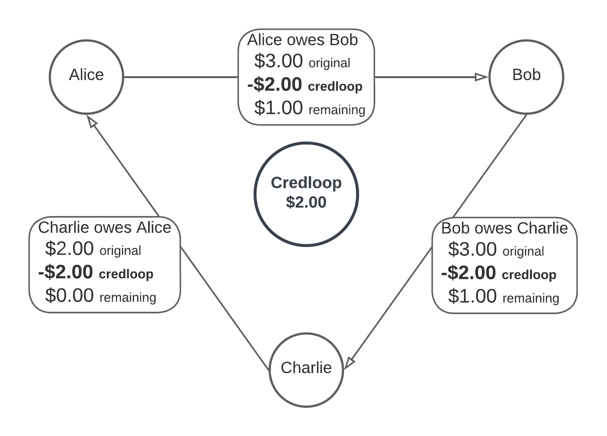

A credex is an alternative to money itself, founded directly on peer-to-peer trust between sovereign humans.
The credex ecosystem offers simple tools that continuously build and verify trust, and straightforward ways to repeatedly use that trust to create and exchange real value. Credex builds economic resilience and everyday prosperity, enabling transactions free of the distortions and requirements imposed by money.
In a money economy, we can only do business to the degree that we have access to money. And in a money economy, the money supply must be restricted or the value of the currency will plummet. Locked within a money economy, we experience inflation and deflation as necessary evils, and we depend on sovereign powers outside of ourselves to constantly hold these evils at bay.
In the credex ecosystem, we can do business to the degree that we trust each other, and there are no outside restrictions imposed on trust. In the credex ecosystem, inflation becomes a trivial problem that we sovereign humans can sidestep with ease.
A credex is simply an IOU that has been supercharged with modern technology and a straightforward principle. This principle is both massively scalable and deeply layered, and its implementation is a direct and potent empowerment of citizens, businesses, and communities everywhere.
This simple, logical, and radical idea has the power to change the world. On this humble foundation we can build a prosperous, free, and sustainable future together:
When you accept a credex in payment, you are trusting that your counterparty can and will provide you with goods or services of your choice, exactly equivalent to the agreed value, within the agreed time. This could be money, or it could be things you would otherwise purchase with money.
The credex ecosystem enables your counterparty to use their own capacities and assets to deliver you the specific goods or services that you desire, through transaction chains that might circle your neighbourhood or span the globe. A credex goes where it needs to go to deliver the promised value. A credex is an IOU with tech-enabled superpowers.
A credex creates trust and is powered by trust. As you make good on your promises, you establish a trustworthy track record that assures future counterparties of your commitment and capacity to provide value. In the credex ecosystem your trustworthiness can easily be proven, while your personal information stays private and secure, in your sovereign data vault.
Within the credex ecosystem, you are a sovereign entity with trust-enabled, credex-enacted economic superpowers at your disposal. You can deliver value across time and space to fulfill the promises you make to those you do business with. You can move your consumption towards bountiful alignment with the natural world. You can live the life of a free, creative and wealthy human being, and empower others to do the same.
As a sovereign human, you sit in your rightful place on this earth. Biologically this is your home and your habitat. Spiritually you are connected to the cosmos. Physically you are part of the web of processes that give you life. Your presence on earth is a blessing. You belong here. This is your world and it sustains you.
As a sovereign human, you are responsible for your decisions and actions. You are responsible for the ways you shape the world. You are karmically, legally, and spiritually responsible. What you do matters. You have the power to decide who you are in every moment, and who you are makes a difference in your world.
What we each do matters. All of us impact our world and create new realities as we go. And what we all do together really matters. Together we forge new universes.
So let's get to work.
Sovereignty is not something that is granted by any outside power. Sovereignty is a deeply human truth that we can activate in ourselves and engage in others. In the credex ecosystem, our starting point for sovereignty is the power to create a medium of exchange. A sovereign economic power can issue and manage a currency, and the credex ecosystem is an environment where you are able to use your own sovereign currency-creating power to efficiently manage your own personal, household, business, and investment economies in respectful, empowering, and mutually beneficial cooperation with others.
Your currency is your word. Your currency is your smart-contracted promise to provide value. Your currency is your IOU. As you build your wealth without money, your word will become stronger than currency. Credexes make it possible, but it's your own responsibility to make that possibility real.
As you express your currency-creating power through credex IOUs, and accept the credex IOUs of other members, the credex ecosystem finds the credloops. If I owe you, and you owe Alice, and Alice owes Bob, and Bob owes Charlie, and Charlie owes Eve, and Eve owes me… the ecosystem will find this credloop and redeem each of these credexes up to the smallest value within the looped credexes, leaving outstanding balances on the rest.
These credloops can be of any length, and each credex in these loops can be denominated in any currency or any asset or derivative formula. A credex can be part of multiple loops until it is redeemed. A credex can be denominated in Canadian dollars, US dollars, euros with a daily inflation adjustment, loaves of bread, ounces of gold, barrels of oil, specific US Treasuries, shares of Huawei, or points on the S&P 500. A credex can be denominated in the difference in the 4-week rolling average hedge ratio of a specified group of call options vs changes in the price of an index of Colombian coffees at the farm gate multiplied by 103.4%... if that's what the counterparties want. A credex can also be denominated in credcoin, but we'll get to that later. A credex of any denomination channels our natural sovereignty into real-world economic and financial superpowers that can be applied in any situation. Credex gives us the freedom to make our own choices and face our own consequences.
The sovereignty expressed through credex is one of belonging and responsibility. You are welcomed as a currency-creating entity. You belong in your rightful place in the credex ecosystem, just like you belong in your rightful place on the earth and within the biosphere. And you are responsible for your decisions and your actions. You are responsible to fulfill your promises, and you will face the natural consequences of your choices.
A credex is a contract for one party to provide a specific amount of value to another within a specific time:
*member1* promises to provide *member2* with *amount* *denomination* worth of value by *date*.
Alice promises to provide Bob with $10.00 CAD worth of value by .
Every accepted credex bears the digital signature of each party to the transaction. These counterparty signatures activate it to connect in credloops. Your outstanding credex is always searching, on behalf of both you and your counterparty, for the ways it can redeem itself. When a credloop is found, every credex along its path is redeemed by the amount of the lowest-value credex in the loop.
In accounting language, an outstanding credex is a payment secured directly between counterparties by a matching, auditable, contingent liability and contingent asset pair, stored on a shared ledger. Credexes are a straightforward application of the centuries-old principles of double-entry accounting. However, instead of merely tracking asset account balances, as is required with money accounts, credex accounts also differentiate between each specific payable and receivable entry. Each entry is a contingent liability for one party (payable), and a contingent asset for the other (receivable). Then the ecosystem clears these imbalances against each other wherever possible, using standard, automated accounting practices, applied at scale across the network as credloops, leaving an auditable, privacy-preserving trail for each account. From this foundational feature springs an incredibly rich environment for value creating exchange and capital growth utilizing ledger-based, low-friction, peer-to-peer smart contract solutions instead of money. Credexes replace money itself with something fundamentally different.
A credex is like a quantum tunnel linking your balance sheet securely with your counterparty's balance sheet, and effortlessly transporting the values you create and the values you require. Every credex opens a customized, peer-to-peer, stable, auditable, and GAAP-compliant portal between counterparties across economic time and space. (GAAP = Generally Accepted Accounting Principles)
Credexes are independent of money, because even if a credex is denominated in CAD, no Canadian dollars are ever required or even desired to fulfill the contract. The promise is to provide value in a specific measure. The contract is specifically for the value, not the money (or other denomination) which measures it.
One reason that credexes can be fundamentally peer-to-peer, vis-a-vis the centralization of money, is that they do not require everyone in the network to agree to a single unified reference point for value. Values are calculated and compared daily on the fly across all the denominations, assets, and formulas, on the conditions that have been smart-contracted by every pair of counterparties.
It is in everyone's best interests that all contracts are fulfilled. If I accept a credex and my counterparty does not make good on their promise, then I've lost the value that was promised and my counterparty has degraded their own trustworthiness. These are economically damaging impacts to each of us, and they are transmitted across the network.
In the credex ecosystem, demurrage occurs when a member defaults on a contract to provide value. The potential for demurrage must exist in order to keep our financial tokens (promises) aligned with the underlying real economy, and the real values being created and exchanged. Yet the actualization of demurrage is against the interests of the entire ecosystem, and particularly against the interests of the counterparties involved, who will naturally use all the tools at their disposal to avert this outcome. They have the support of the entire ecosystem in doing so.
Credex smart contracts are unenforceable (without recourse). They are based purely on trust, and the only direct consequences that I will bear for failing to provide the value that I have promised is coded directly into the credex that I have signed: this demurrage will become part of my permanent transaction history in the ecosystem.
The only direct consequence is that my demurrage is tracked. However, the cascading natural responses to this (non-)action and consequence could be significant, especially past certain thresholds.
Future counterparties will request my account history in some form before trusting me, and will likely have demurrage thresholds past which they will simply not transact with me. And even below that threshold they may increase their prices to me, having to play the odds that some percentage of their trust in me will be misplaced.
No discussion of decisions and consequences can be complete without touching on charity. Shit happens. People make mistakes. Natural disasters happen. Disastrous business decisions happen. People take risks and come up empty. The world changes and life changes, and humans are always vulnerable. Nothing works out exactly as planned on this adventure.
Your wealth-creating sovereign superpowers shine that much brighter when they are kindled with authentic care towards those in need. Charity arises naturally from that place. A human facing the natural consequences of not following through on their promises is a human who is in trouble and deserves support, and then a second chance, and a third chance, and more.
Trust and verify, trust and verify. Give space for those struggling to find themselves, so they can re-arise as trustworthy peers who now have a story of overcoming hardship fading into their past.
Humans are capable of truly horrible things. Some humans sometimes act on those capabilities. And some are simply out to take advantage of other people and get a free ride to whatever degree they can get away with.
The credex ecosystem links actions to accounts, and accounts to humans. Your account history may be your own, but every time you want to enter into an economic relationship, your counterparty has the right to request verifiable data on your trustworthiness. This data can be run through trusted third-party algorithms to maintain whatever degrees of privacy the counterparties require between them. Those who have a pattern of broken promises may be worthy of charity and of respect as humans, but they don't make great counterparties for value-building transactions until they have re-established their trustworthiness from the ground up. And it's up to each counterparty to determine what that means in each situation.
Every human is subject to the laws and regulations of their respective government and jurisdiction. Credex provides each of us with a private, auditable ledger for which we are fully accountable. Any authorities who have the right to demand an accounting of our money transactions also have the right to demand an accounting of our credex transactions. The credex ecosystem is not a place for bad actors to take refuge from consequences.
Peer-to-peer trust between sovereign humans changes everything. The credex ecosystem empowers trust at scale through simple, decentralized, and potent methods.
The only standards that you are held accountable to are your own. No one forces you to enter into contracts. You don't have to issue credexes. When you decide to issue credexes, no one forces you to follow through on your promises. All that the credex ecosystem provides is a shared ledger where any defaults on these promises are noted. This simple mechanism provides a secure transparency that enables the exponential growth of trust.
This trust is continually leveraged via the shared ledger into a secure medium of exchange, through which we create value for ourselves and others.
Where trust-enabled value is created, trust-based capital grows. Where trust-based capital grows, investments, innovation, generosity, and creativity thrive, and widespread multigenerational wealth can be built.